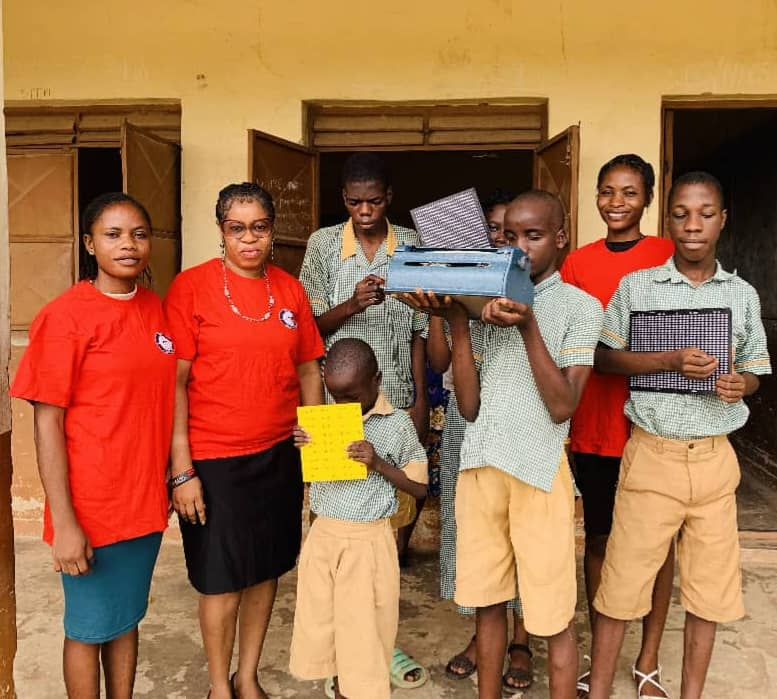

Osun Region - Special Needs School
On the 13th of October, 2024, we visited the school of special needs in Iwo, Osun State, supporting children with various challenges.


Uplifting Lives, Restoring Hope
visit to the aged at kuti area, iwo osun state.
ECN Foundation team supporting 80-year-old Mama Asifat in Kuti area, Iwo Osun State.
This is an 83-year-old man we visited on the 25th of December 2024 at General Hospital area in Iwo, visit to the handicapped school.
On the 13th of October, 2024, we visited the school of special needs in Iwo, Osun State, supporting children with various challenges.
Visiting the school of the impaired once again, giving support with food items and financial aid in Iwo, Osun State.


This is a 94 years old widowed woman, who we visited on the 20th of February. 2025. At This was done in umunkiri village in Abia state

Inauguration pictures of our Lagos Branch.


Our visit to the hospital to support patients and provide care packages. isolo general hospital
Supporting artisans and street workers with essential supplies and financial aid.

.jpeg)

.jpeg)
.jpeg)

"Operation Feed the Future" event on December 14, 2024, supporting orphaned children.